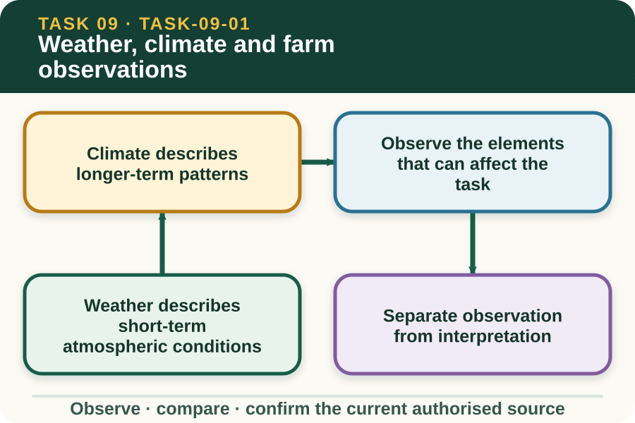
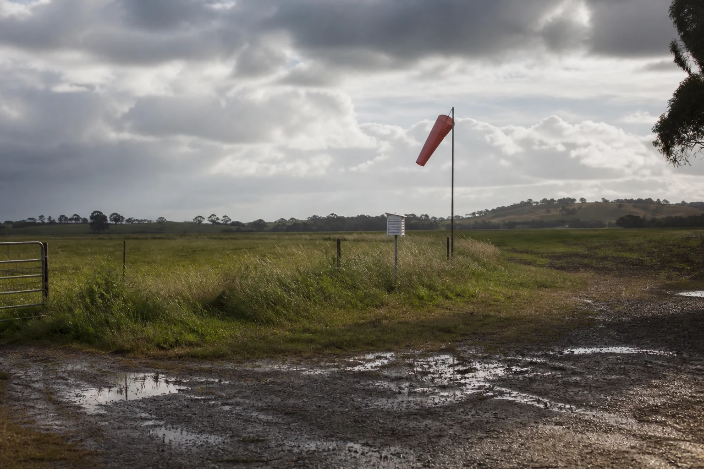

Learning purpose
Distinguish weather from climate and identify observations relevant to farm work.
Task 9 · Lesson 1 of 4
Distinguish weather from climate and identify observations relevant to farm work.
Learning purpose
Distinguish weather from climate and identify observations relevant to farm work.
Success criteria
Learning boundary
Supplementary learning and formative practice only. Current RTO assessment, local procedures and authorised supervision control real work.

Weather is the condition of the atmosphere at a particular place and time. It includes temperature, wind, precipitation, humidity, cloud and atmospheric pressure, and it can change within minutes or across a working day.
A useful weather statement is located and timed. Saying that it is windy is less useful than recording that gusty westerly wind was observed at the northern yards at 10:20 am, because the second statement can be compared with a forecast, a work plan and later observations.
Climate summarises patterns, averages and variation over a long period for a region or season. It can inform broad enterprise planning, but it does not tell a worker exactly what the weather will do on one afternoon.
Do not use a climate statement as a substitute for current information. A district known for dry spring conditions can still receive a severe rainfall event, so the current forecast, warning service and local observations remain necessary.

Different tasks are exposed to different combinations of weather. Wind can affect visibility and off-target movement, rain can change surfaces and access, heat can affect people and animals, and cold, wet and windy conditions can combine to increase exposure.
Observation should begin with the job brief. Ask which weather elements could change access, people, animals, materials, equipment or product quality, then collect only the information needed to discuss the work with the supervisor.
An observation records what was seen, measured or received from a named source. An interpretation explains what that evidence may mean for the planned task, while a decision states the authorised change that follows.
Keeping these parts separate prevents overclaiming. Dark cloud on the western horizon is an observation; rain may reach the site is an interpretation; moving or postponing work is a decision that must follow the current plan and supervisor direction.
Fictional worked example
Observed evidence: On 14 September 2026 at 8:10 am, a fictional training property records 7 °C, steady light rain and a wet laneway, while the saved class forecast issued at 5:00 am indicates rain easing later. Decision and reason: Priya does not declare the lane safe or unsafe from the forecast alone because the local surface condition has changed. Safe action: She reports the time, location, observed surface and forecast issue time to the supervisor. Result: The supervisor changes the morning schedule using the property's contingency plan. Next check or record: Priya records the confirmed change and checks the current Bureau update before the next review point.
Conditions can vary across a property because of terrain, aspect, shelter, surface cover and distance from a weather station. A reading from one point provides evidence for that point; it should not be silently applied to every paddock, shed or access track.
Local observations add context to an authoritative regional forecast, but they do not replace warnings or expert advice. Record where the observation was made and report a meaningful difference rather than trying to produce a private forecast.
A clear record normally identifies date, time, location, observed or measured conditions, information source, likely task effect, person notified and confirmed response. Use the workplace's current terminology and form rather than inventing a new emergency process.
Regular records show change. Two observations made with the same method and location can reveal a trend, while a single undated description cannot show whether conditions are improving, worsening or simply different.
External media loads only after you choose it.
Source-linked video
Why watch: Use Australian climate zones to anchor the weather-versus-climate distinction.
Watch for: How are climate zones described using long-term temperature and rainfall patterns rather than today's conditions?
Formative practice
Each option explains the consequence. These answers save only on this device.
Written application
Apply and keep a learning record
Use a teacher-supplied fictional photograph and saved forecast excerpt. Record the location, time, four observable elements, one possible task effect and the clarification needed. Do not treat the saved forecast as current advice.
Learning record: A supplementary-learning observation card that keeps fact, interpretation and authorised decision separate.
Lesson responses and the activity are formative learning only. Formal sufficiency and competence remain with the current RTO process.
Source basis: AHCWRK210 Release 1 requirements for checking weather and climate information, recognising change and reporting likely work impacts; NESA Weather focus-area concepts; authorised teacher-posted weather notes. Current Bureau of Meteorology information and the local plan control real decisions.